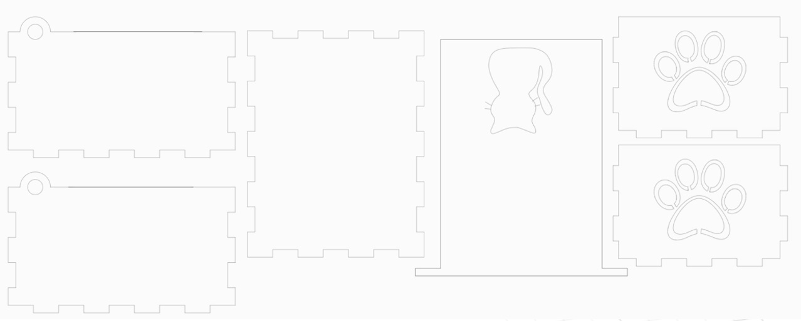

Computer controlled cutting involves the use of a computer to direct the movement of a cutter, such as a laser, and accurately cut through or engrave materials based on the vector design uploaded. In EP1000 we made use of a laser cutter to carry out computer controlled cutting. Commonly used lasers in laser cutting machines include; CO2 lasers, fiber lasers and neodymium lasers. In SP's FabLab located at T11C, students mainly use the LC-EpilogM2-11 laser cutting machine, which comes with a dual source option allowing for the incorporation of both a CO2 and fiber laser source into a single laser system.

Before we are able to carry out laser cutting, we have to first create the necessary vectors, which is basically the design that the computer directs the laser to cut according to. For my projects, I decided to use Inkscape as the vector editing software as it is free, flexible and simple to use. Below is an example of what a vector looks like. This vector was used for the creation of my music box.
Click here to see my music box!
Once the vector design has been confirmed, we can move on to laser cutting. The software that we use to prepare for cutting is CorelDRAW, which is also a vector editor. It is used to finalise the vector design and make any final edits, such as the addition of portable network graphics (PNG) for engraving. It is important to ensure that the vectors are adjusted to hairline thickness as well, so that it will cut instead of engrave. Next, adjust the speed and power setting accordingly. Higher power and lower speed is generally used for vectors and vice versa for engravings.